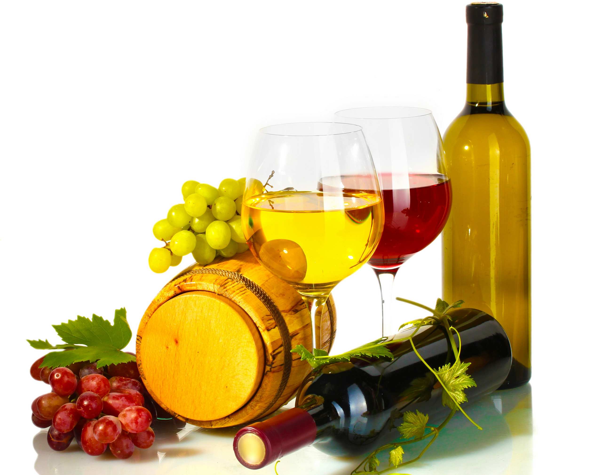

Лабораторная 2 Татаренкова ПИ18-3Этот сайт для второй лабораторной |
|---|
|
Чтобы насладиться идеальной дегустацией вина в домашних условиях, нет необходимости быть экспертом винного мира. Достаточно иметь качественное вино, охлажденное до нужной температуры, правильные бокалы и знать пару простых секретов, благодаря которым процесс откроется для вас совершенно по-другому. Чтобы вы могли открыть для себя многообразие вина, его вкусов и ароматов, сегодня мы собрали для вас 6 простых секретов дегустации от Анны Лаегара, амбассодора испанского винного бренда D.O. Rueda. 1.Используйте отдельный бокал для каждого вида вина Если вы собираетесь дегустировать несколько вин, обязательно приготовьте отдельный бокал для каждого из них. Таким образом вы не будете смешивать ароматы, наслаждаясь каждым из них по отдельности. 2.Пробуйте вино вслепую В данном случае «вслепую» означает не только закрытые глаза. Если вам подарили вино, попробуйте дегустировать его, не читая этикетки и не ориентируясь на бренд. Так вы не будете зависеть от ожиданий и сможете ориентироваться только на свои ощущения. Закройте глаза, чувствуйте аромат, смакуйте и наслаждайтесь. 3. Наслаждайтесь многообразием цвето Прежде чем отпить глоток, изучите оттенки благородного напитка, который находится в вашем бокале. Знали ли вы, что белые вина могут иметь десятки оттенков, в красные – и того больше? 4. Держите бокал за ножку Причина очень проста: держа бокал за ножку, вы избегаете нагревания вина руками. Так вы сможете медленно поворачивать бокал, наблюдая, как на стенках возникают следы в виде подтеков. Их еще называют «ножки» или «слезы вина». 5. Вдохните аромат несколько раз Многим может показаться забавным жест сомелье, который долго вдыхает аромат перед тем, как сделать глоток. Однако это поможет открыть многообразие ароматов вина, стоит только погрузиться в процесс и быть в моменте. Перед дегустацией лучше не наносить парфюм или средства с ярко выраженным запахом. 6. Делитесь впечатлениями Все мы совершенно по-разному воспринимаем ароматы и вкусы, поэтому всегда интересно проводить дегустацию в компании, чтобы делиться ощущениями и удивляться их многообразию. |
Меню |
Общая информация
Коты это хорошо |